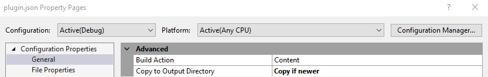

plugin.json 檔案結構說明
此檔案包含外掛的 Meta 資訊描述，nopCommerce 使用這些資訊來判斷此檔案屬於哪個外掛群組、該外掛是否與當前的 nopCommerce 版本相容、外掛的版本號，以及其他相關資訊。每個 nopCommerce 外掛都必須包含此檔案。
檔案結構
{
"Group": "Payment methods",
"FriendlyName": "PayPal Commerce",
"SystemName": "Payments.PayPalCommerce",
"Version": "4.70.1",
"SupportedVersions": [ "4.70" ],
"Author": "nopCommerce team",
"DisplayOrder": -1,
"FileName": "Nop.Plugin.Payments.PayPalCommerce.dll",
"Description": ""
}
Group：nopCommerce 用於在 後台 → 設定 → 本地外掛 選單的外掛列表中，識別、搜尋或篩選外掛所屬的群組名稱。這可以是您的公司名稱。
FriendlyName：這是外掛的顯示名稱，用於從外掛列表中識別該外掛。
SystemName：nopCommerce 用於唯一識別該外掛，因此它必須與所有其他外掛不同。我們無法註冊超過一個具有相同
SystemName的外掛。Version：這是外掛的版本號，您可以將其設定為任何您喜歡的值。此數字用於識別目前安裝在 nopCommerce 應用程式中的外掛版本。不過，我們建議遵循以下格式 -
"{nopCommerce_version_number}.{build_number}"。SupportedVersions：這是一個字串陣列。它包含此項外掛所支援的一個或多個 nopCommerce 版本。在開發過程中，請確保當前您正在開發此項外掛的 nopCommerce 版本已包含在此清單中，否則它將不會載入到外掛列表中。
Author：這是關於外掛創作者的資訊。可以是個人姓名、公司名稱或開發此項外掛的團隊名稱。
DisplayOrder：用於設定此項外掛在外掛列表中顯示的順序。其值為數字類型。
FileName：具有以下格式 Nop.Plugin.{Group}.{Name}.dll（這是您的外掛組件檔案名稱）。
Description：包含外掛的簡短描述，例如此項外掛的用途以及功能。這將顯示在插件列表中的外掛名稱下方。
LimitedToStores：可使用此項外掛的商店識別碼清單。若為空，則此項外掛可在所有商店中使用。
LimitedToCustomerRoles：可使用此項外掛的顧客角色識別碼清單。若為空，則此項外掛適用於所有角色。
DependsOnSystemNames：此項外掛所依賴的其他外掛系統名稱清單。
Tip
編輯完 plugin.json 檔案內容後，您需要將其 Copy to Output Directory（複製到輸出目錄）屬性值設為 Copy if newer（若有更新則複製）。

這是必要的，因為我們需要將此檔案複製到編譯後的目錄，nopCommerce 才能存取此檔案，以便在管理後台的外掛列表中顯示我們的外掛。範例
FixedOrByCountryStateZip 外掛擁有以下
plugin.json檔案：{ "Group": "Tax providers", "FriendlyName": "Manual (Fixed or By Country/State/Zip)", "SystemName": "Tax.FixedOrByCountryStateZip", "Version": "4.70.1", "SupportedVersions": [ "4.70" ], "Author": "nopCommerce team", "DisplayOrder": 1, "FileName": "Nop.Plugin.Tax.FixedOrByCountryStateZip.dll", "Description": "This plugin allow to configure fix tax rates or tax rates by countries, states and zip codes" }Google Analytics 小工具擁有以下 plugin.json 檔案：
{ "Group": "Widgets", "FriendlyName": "Google Analytics", "SystemName": "Widgets.GoogleAnalytics", "Version": "4.70.1", "SupportedVersions": [ "4.70" ], "Author": "nopCommerce team, Nicolas Muniere", "DisplayOrder": 1, "FileName": "Nop.Plugin.Widgets.GoogleAnalytics.dll", "Description": "This plugin integrates with Google Analytics. It keeps track of statistics about the visitors and ecommerce conversion on your website" }